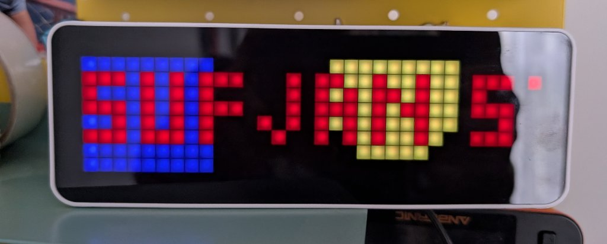

Mpris2awtrix
display DBus/MPRIS track details on Ulanzi/Awtrix 3 display Home Assistant automation

Table of Contents
This guide configures your Ulanzi/Awtrix 3 display to show notifications with the currently playing track’s artist and title whenever a new song starts on any MPRIS-compatible media player (Feishin
, Spotify, Firefox, VLC, etc.) on your Linux machine. It uses dbus2mqtt to forward media player events over MQTT, which are then picked up by Home Assistant and sent to the Awtrix display.
Prerequisites 
- Install Awtrix 3 firmware on your Ulanzi Smart Pixel clock (Amazon )
- Create a user (preferably a local access only) in Home Assistant for Awtrix
- Configure MQTT in Awtrix
- Install dbus2mqtt
with
uv tool install dbus2mqtt - Install HA Awtrix component for Home Assistant
{kind=link}
Configure dbus2mqtt
Download the example mqtt mediaplayer config
and save it as ~/.config/dbus2mqtt/config.yaml. You can customize this file to filter specific media players if needed.
Create a new systemd service unit: ~/.local/share/systemd/user/mpris2awtrix.service
1[Unit]
2Description=Send notification to Awtrix display via HA MQTT
3
4[Service]
5Type=simple
6ExecStart=/home/<YOUR_USERNAME>/.local/bin/dbus2mqtt --config /home/<YOUR_USERNAME>/.config/dbus2mqtt/config.yaml
7User=<YOUR_USERNAME>
8StandardOutput=journal
9StandardError=journal
10
11[Install]
12WantedBy=default.target
Enable mpris2awtrix service
1systemctl --user daemon-reload
2systemctl --user enable mpris2awtrix.service
3systemctl --user start mpris2awtrix.service
4systemctl --user status mpris2awtrix.service
Create Home Assistant automation
Here’s a raw YAML Home Assistant automation which sends a notification to Awtrix display only when a new track starts playing.
The Position == 0 condition ensures it triggers only at the beginning of a track (not on resume or seek), while PlaybackStatus == 'Playing' confirms the media is actively playing.
1alias: Show track name on Awtrix
2description: ""
3triggers:
4 - trigger: mqtt
5 options:
6 topic: dbus2mqtt/org.mpris.MediaPlayer2/state
7 enabled: true
8conditions:
9 - condition: template
10 value_template: "{{ trigger.payload_json.Position == 0 }}"
11 enabled: true
12 - condition: template
13 value_template: "{{ trigger.payload_json.PlaybackStatus == 'Playing' }}"
14 enabled: true
15actions:
16 - action: awtrix.notification
17 metadata: {}
18 data:
19 device: <REPLACE_WITH_YOUR_AWTRIX_DEVICE_ID>
20 text:
21 - t: >-
22 {{ trigger.payload_json.Metadata.get('xesam:artist', ['Unknown Artist'])[0] }}
23 c: FF0000
24 - t: " - "
25 c: AAFFBB
26 - t: >-
27 {{ trigger.payload_json.Metadata.get('xesam:title', 'Unknown Track') }}
28 c: 00FF00
29 duration: 10
30 rainbow: false
31 wakeup: true
32 effect: Ripple
33mode: single
Test it
Play a track in your media player. The Awtrix display should show a notification with the artist and track name.
Check the logs with journalctl --user -u mpris2awtrix.service -f if it doesn’t work.